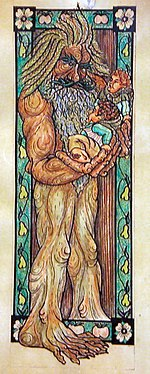

Personaje de El Señor de los Anillos
Ilustración de Bárbol con los hobbits Merry y Pippin en sus manos.
Creador(es)J. R. R. Tolkien
Capítulo(s)
| Nombre original |
Treebeard |
| Fangorn (en sindarin ) |
|
| Raza | Treebeard |
| Fangorn (en sindarin) |
|
| Sexo |
|
| Edad |
Desconocida |
| Estatura |
|
| Título |
Guardián de Fangorn Custodiador de Isengard |
| Pareja(s) |
|
| Residencia |
|
| Perfil en IMDb |